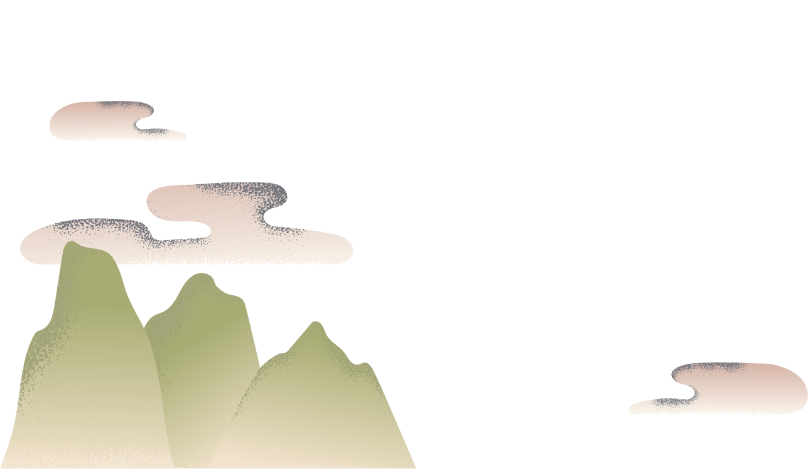
OUR STORY
二人の共通項って、なんだろう?岩手出身、横浜在住。子どもが同じ歳で、本をよく読む。仕事も好きなことも、家庭にも共通点があった。語れるテーマはいろいろありそうだ。
かじぃとことりが
お茶を淹れながら
ゆっくり考える
日々のこと
教育のこと
家族のこと
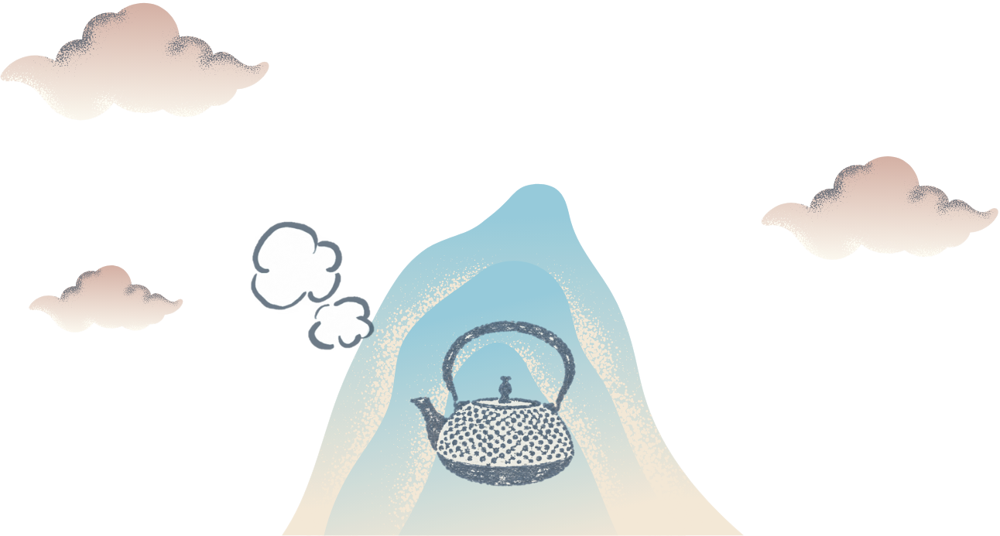
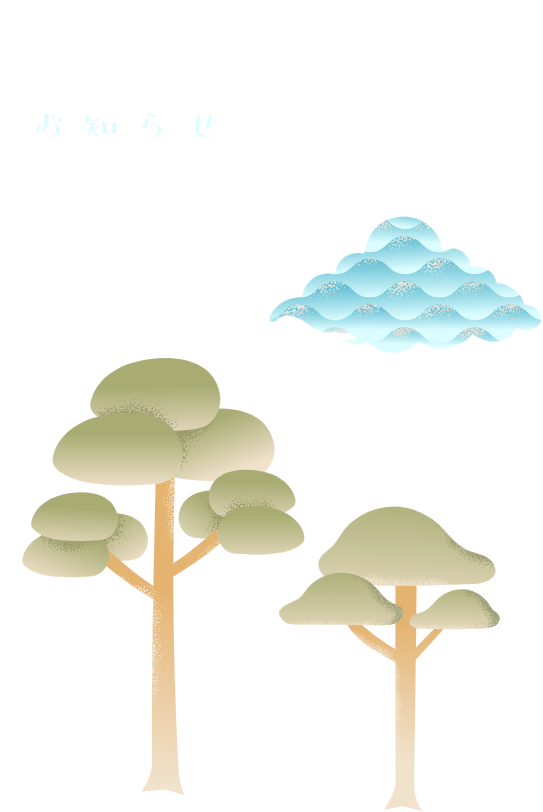

二人の共通項って、なんだろう?岩手出身、横浜在住。子どもが同じ歳で、本をよく読む。仕事も好きなことも、家庭にも共通点があった。語れるテーマはいろいろありそうだ。
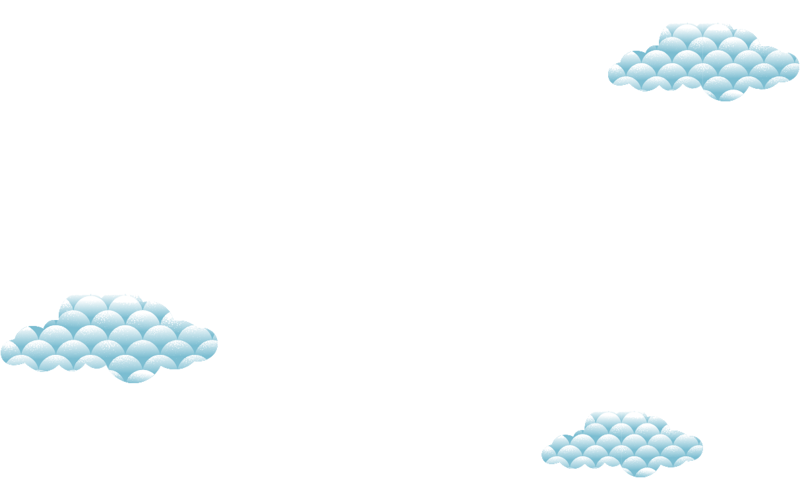
キッズプログラミング教室講師。建築業界出身。短編小説やコーヒー、お茶のことなどを発信しています。
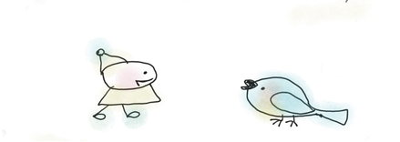
子育てと学習支援の活動をしています。読書とお茶が好き。二児の母。
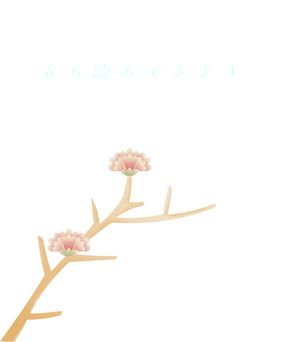
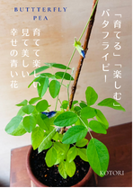
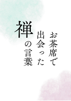
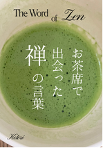
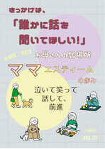
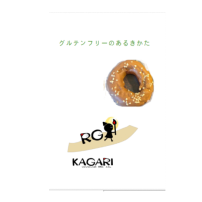
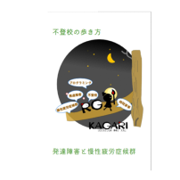
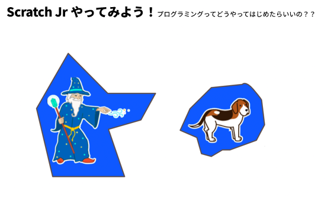
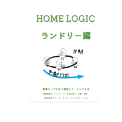
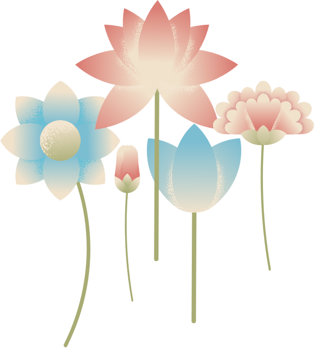